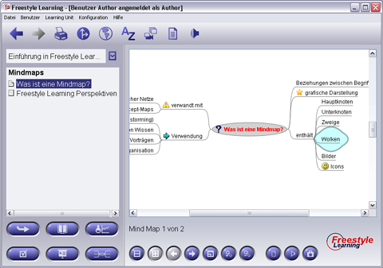

Mit Hilfe der Mindmaps-View lassen sich Inhalte im Sinne der Brainstorm-Technik sammeln und strukturieren. Komplexe Zusammenhänge können somit vereinfacht dargestellt werden, bestehend aus unterschiedlichen Knotenformen und Kanten, die darüber hinaus mit Symbolen versehen werden können (Glühbirne, Bleistift etc.).

Neben den Standard-Interaktions-Schaltflächen stellt die Mindmaps-View zusätzliche Schaltflächen für die Navigation und das Suchen bereit.
View-spezifische Interaktions-Schaltflächen
| Heranzoomen | Heranzoomen der Minmaps-Darstellung | |
| Hinauszoomen | Hinauszoomen aus der Mindmaps-Darstellung | |
| Suchen | Suchen nach Begriffen | |
| Weitersuchen | Weitersuchen bei mehreren Suchergebnissen |
Zurück zur Hauptseite